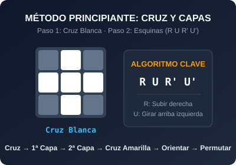
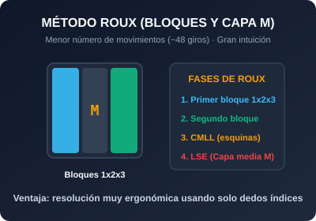
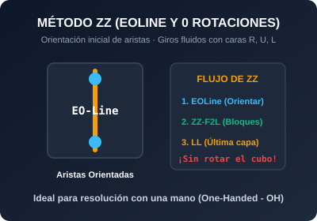

Método principiante
Una forma sencilla de aprender a resolver el cubo capa por capa (cruz blanca, esquinas, capa central y última capa). Usa algoritmos fáciles de recordar como el conocido Sexy Move (R U R' U').
El mundo del cubo de Rubik
Conoce diferentes métodos para resolver cubos de Rubik con sus pasos y notaciones, y descubre cuál se adapta mejor a tu forma de aprender y practicar.

Una forma sencilla de aprender a resolver el cubo capa por capa (cruz blanca, esquinas, capa central y última capa). Usa algoritmos fáciles de recordar como el conocido Sexy Move (R U R' U').

Uno de los métodos más utilizados en speedcubing para el cubo 3x3. Se divide en 4 etapas: Cruz (Cross), Primeras dos capas (F2L), Orientación de la última capa (OLL) y Permutación (PLL).

Método alternativo que utiliza un enfoque diferente para resolver el cubo. Se enfoca en construir dos bloques de 1x2x3 y resolver el resto con la capa media (M), reduciendo el número de movimientos.

Método que busca una buena orientación inicial de aristas (EOLine). Al tener las aristas orientadas desde el inicio, puedes armar el resto del cubo usando solo giros de R, U y L sin rotarlo en las manos.